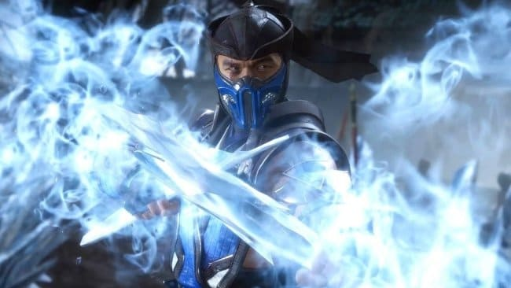

Mortal Kombat 11!!!
Mortal Kombat 11
Mortal Kombat 11 es un videojuego de lucha desarrollado por NetherRealm Studios y publicado por Warner Bros. Es la undécima entrega de la serie Mortal Kombat y una secuela de Mortal Kombat X, el juego se lanzó en abril de 2019 para Microsoft Windows, Nintendo Switch, Playstatio 4 y Xbox One.
Argumentos:
- Nuevo Modo Historia - Continúa la legendaria saga de más de 25 anos con una nueva historia cinemática. Los jugadores podrán jugar con una gran variedad de personajes del pasado y el presente en una nueva historia que desafia al tiempo para enfrerntar a Raiden contra Kronika.
- Nuevo Sistema de Personalizacion - Ofrece opciones de personalización casi ilimitadas. El jugador podrá personalizar a sus luchadores con una gran variedad de trajes, equipamiento, habilidades, vídeos de presentación y victoria, burlas y brutalidades que se conseguiran jugando.
- Personajes Populares Nuevos Y Antiguos - Elige de entre una lista de luchadores con nuevos personajes como Geras, y personajes tan queridos como Baraka, Raiden, Skarlet, Scorpion, Sonya Blade, Sub-Zero y muchos mas!!
- Más Modos, Desafíos y Recompensas - El juego está lleno a rebosar de modos, como Torres del tiempo, que se basa en juegos antiguos de NetherRealm y en el que el jugador podrá poner a prueba sus habilidades en diversos desafíos.
- Nuevos Golpes Devastadores y Fatalities Emblemáticas - Las batallas se muestran más salvajes que nunca, con mejoras en gráficos y animaciones, para continuar con la experiencia de Mortal Kombat 11 con más variedad que nunca.
La jugabilidad; Al igual que los dos juegos anteriores de la serie, Mortal Kombat 11 es un videojuego de lucha 2.5D. Junto con el regreso de los Fatalities y Brutalities, se introducen nuevas características de juego, como Fatal Blows y Krushing Blows, Flawless Block. Otro finalizador que regresa es Mercy. En el pack de expansión Aftermath se incluyeron otros 2 finishers que regresaron de Mortal Kombat II, los Stage Fatalities y los Friendships.
Mortal Kombat 11 presenta una característica de variación que ofrece un sistema de personalización de personajes similar al sistema Gear en el videojuego de lucha anterior de DC Comics de NetherRealm Studios Injustice 2.

Mejorando con el sistema de variación presentado en Mortal Kombat X. Cada personaje tiene un conjunto inicial de atuendos, armas y movimientos, que el jugador puede personalizar aún más. Ademas en Mortal Kombat 11 la apariencia de los personajes no determina sus habilidades, lo que permite a los jugadores crear listas de movimientos personalizados independientemente de la apariencia de su personaje.
El juego comienza justo al final de los hechos ocurridos en Mortal Kombat X. Raiden ha absorbido la energía que shinnok indujo en la fuente del Jinsei, adquiriendo una personalidad autoritaria y despiadada...
Tenemos disponibles las versiones Ultimate y Aftermath!!